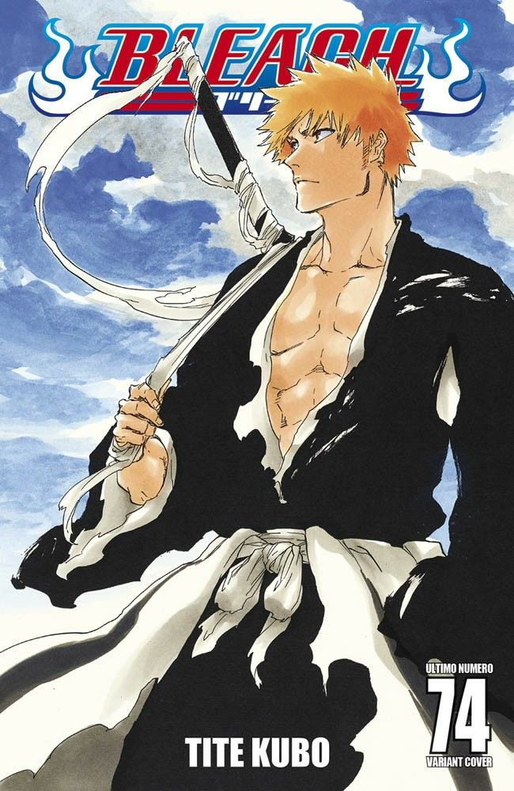

Блич
О манге
«Блич» (яп. BLEACH) — манга, созданная Титэ Кубо. Публиковалась с 7 августа 2001 года по 22 августа 2016 года в журнале Weekly Shōnen Jump издательства Shueisha, собрана в 74 тома. Аниме-адаптация от студии Pierrot выходила с октября 2004 года, а в 2022 году началась трансляция арки «Тысячелетняя кровавая война». История следует за Ичиго Куросаки, который становится проводником душ, чтобы защищать мир живых и сражаться с пустыми и другими угрозами.
Автор: Титэ Кубо — мангака, известный уникальным стилем и эпическими сражениями.
Дата выпуска: 7 августа 2001 (манга), 5 октября 2004 (аниме).
Ключевые персонажи
Ичиго Куросаки
Главный герой, проводник душ, защищающий мир от пустых.

Рукия Кучики
Проводница душ, передавшая Ичиго свои силы, его подруга.
Орихимэ Иноуэ
Подруга Ичиго, обладающая уникальными целительными способностями.
Урю Исида
Квинси, союзник Ичиго с выдающимися навыками стрельбы.